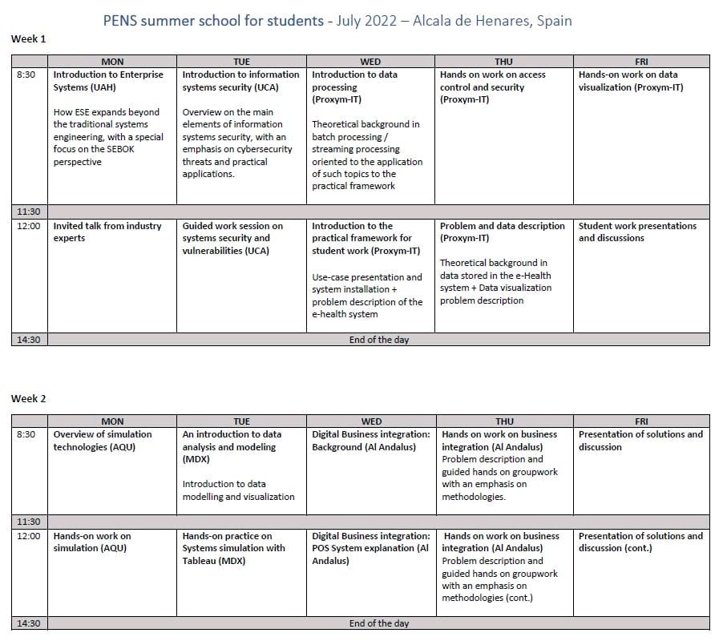
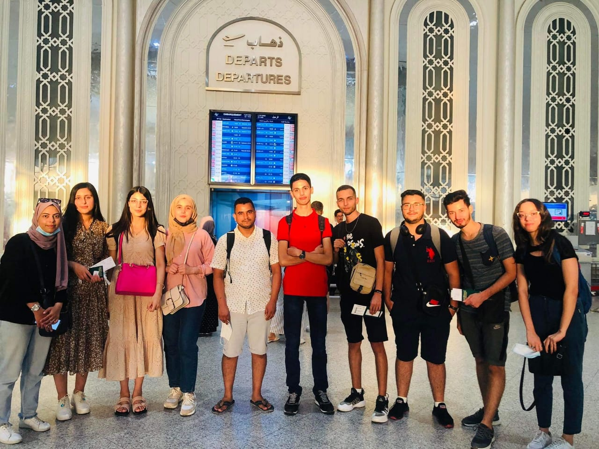
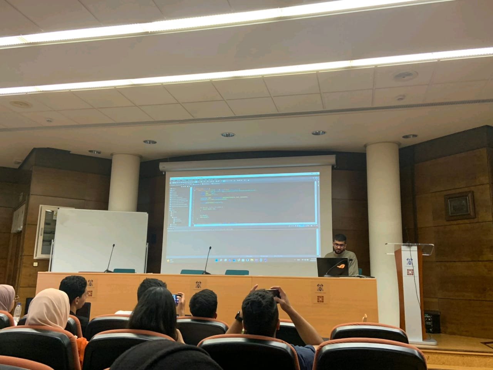

1. Summer school à l'université Alcala de Henares en Espagne
L'ISIMM avait élaboré une initiative prometteuse en organisant une Summer School en partenariat avec Erasmus+ et en collaboration avec l'Universidad de Alcalá de Henares en Espagne, ainsi que l'Université de Birzeit en Palestine. Cette initiative avait pour objectif d'offrir une expérience éducative internationale exceptionnelle à dix étudiants soigneusement sélectionnés par l'ISIMM. Ces étudiants ont eu l'opportunité unique de participer à la Summer School qui s'est déroulée du 18 au 31 juillet 2022.
Au cours de cette période, les participants ont bénéficié d'un programme d'études intensif axé sur des domaines clés, favorisant ainsi le partage de connaissances et la compréhension interculturelle. En encourageant la mobilité étudiante, cette collaboration entre l'ISIMM, Erasmus+ et les universités partenaires a renforcé non seulement les compétences académiques des étudiants, mais a également favorisé des liens durables entre les institutions et les cultures. Cette Summer School a ainsi contribué à l'enrichissement mutuel des communautés éducatives impliquées, consolidant les relations internationales de l'ISIMM. Elle a représenté une occasion exceptionnelle pour les participants de développer des compétences académiques et interpersonnelles tout en élargissant leurs horizons culturels.


Les dix étudiants soigneusement sélectionnés pour participer à cette Summer School exceptionnelle étaient tous des étudiants en deuxième année d'Informatique à l'ISIMM. Ces passionnés de l'informatique ont démontré un engagement remarquable dans leurs études, se démarquant par leur excellence académique et leur curiosité intellectuelle. Leur participation à cette initiative internationale a offert une opportunité unique d'approfondir leurs connaissances dans leur domaine tout en élargissant leurs horizons au-delà des frontières nationales. Ces étudiants de L2 Info ont su représenter avec brio l'ISIMM, mettant en avant leurs compétences informatiques avancées et leur capacité à s'adapter à des environnements académiques divers. Leur implication dans cette expérience internationale a sans aucun doute renforcé leur profil académique et professionnel, tout en contribuant à forger des liens interculturels essentiels pour leur avenir dans le domaine de l'informatique.
L'expérience à l'Universidad de Alcalá de Henares en Espagne a été une immersion enrichissante pour les dix étudiants de L2 Info de l'ISIMM. Les enseignants de cette université renommée ont partagé leur expertise en informatique à travers des cours stimulants, combinant théorie, pratique et échanges interculturels. Les participants ont bénéficié d'une perspective unique sur les défis informatiques mondiaux et ont collaboré avec des étudiants espagnols et internationaux. Au-delà de l'aspect académique, l'expérience a inclus la découverte de la culture espagnole à travers des activités locales. Cette immersion complète a contribué à former des professionnels de l'informatique plus avertis, prêts à relever les défis d'un monde interconnecté.
